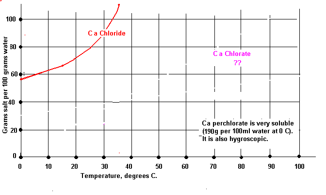

| Calcium Chlorate |
|---|
Stainless steel, this was the best of a bad lot but it should be considered useless.
Copper, similar to SS
Iron, useless
Aluminium, useless
Nickel, useless
Zinc, useless
Tungsten, useless
Graphite, useless
The problem was that the current stopped flowing after a short period as the hydroxide sticks to theses materials. It is not known why it does not seem to stick to Ti to any great extent. Lower current densities on the 'bad' materials was tried but the current stopped after about the same amount of charge had passed through the cell. Increasing the voltage across the cell was useless as the current only flowed for a small amount of extra time and then fell to zero. Resting the cathode by turning off the cell current every few seconds proved useless.
Ti can be got from welding supply shops in the form of welding rods, a 'sample' can often be got.
The rod can be bent in a spiral around the anode. Racing and mountain bike shops may be able to supply scrap Ti.
The current density on the Ti cathode was in the region of 80mA/cm2. The cathode needed to be cleaned every 24 hours or so at the start of electrolysis and also as the cell came near toward becoming a Perchlorate cell (if you run it that long). In between it was cleaned every two days or so, perhaps it would run for longer without any attention. A dilute solution of HCl was used to put the cathode into, in order to remove any Hydroxide that built up on it.
The pH of the cell remained around about 7 throughout the run, this is close to the ideas pH for a Chlorate cell for maximum current efficiency. A current efficiency of 68% was measured. This current efficiency was measured by letting the cell run until Perchlorate was seen to form (detected with methylene blue) and assuming that there was 10% Chloride unconverted to Chlorate. The current efficiency will be higher if you stop and harvest your cell sooner.
The starting concentration of CaCl2 was 175 grams dissolved in 500ml water which give 600ml of solution. The temperature of the solution was about 60C. The current was run at 3.5 amps and the anode was lead dioxide and the cathode was Ti.
Note that when calculating the ampere hour requirement of the cell that Ca Chloride takes 12 moles of electrons per mole of Chloride (100% efficiency).

| Some properties of Ca Chloride and Chlorate | ||
|---|---|---|
| CaCl2 | Ca(ClO3)2 | |
| Molecular weight | 111 | 207 |
The following is from Electrolysis of Solutions of Calcium Chloride. By H. Bischoff and Fritz Foerster (Zeit Elektrochem., 1898, 4, 464). Available on Google books. This is translated from the German.
Oettel's statement that a better yield of Chlorate is obtained in the electrolysis of Calcium Chloride than in that of Potassium Chloride is confirmed. Measurements of the gases evolved during the electrolysis give the percentages of the current employed
(a) in the formation of Hypochlorite, Chlorate, and Perchlorate,
(b) in reducing hypochlorite at the cathode,
(c) in decomposing water.
When a solution of 74.3 grams of Calcium Chloride in 500 c.c. of water is electrolysed with 6.7 Volts, and current densities of 9.1 Amperes per sq. dcm. at the Anode and 13 Amperes per sq. dcm. at the Cathode, 85.7 to 90.4 per cent, of the current yields Oxygen compounds of Chlorine, mainly Chlorate, 1.4 to 2.9 per cent, reduces Hypochlorite, and 7.8 to 12.8 per cent, decomposes water.
With a solution of 100 grams of Potassium Chloride + 7.5 grams of Potash in 500 c.c. of water, the E.M.F. being 4.8 Volts and the current densities the same as before, the corresponding values were 50.9 to 61.9, 12 to 19.9 and 20.8 to 29.6. Both solutions were cooled with ice. A solution of Barium Chloride gave results very similar to those obtained with Potassium Chloride.
The small reduction observed with Calcium Chloride is probably due to a layer of Calcium Hydroxide on the Cathode which acts as a diaphragm ; the greater part of the Calcium Hydroxide formed combines with Chlorine, but part of it remains undissolved, free Hypochlorous acid existing in the solution and volatilising with the gases evolved. Further experiments show that at 20—25° the best yield of Chlorate is obtained from solutions containing at least (preferably much more than) 10 per cent of Calcium Chloride, and with a current density of 10 Amperes per sq. dcm. at the Anode and at least double that amount at the Cathode; the yield is nearly 90 per cent. The deposit of Calcium Hydroxide on the Cathode considerably increases the E.M.F. required; at 50°, however, 4.55 Volts suffice, and the yield is but slightly reduced (80 to 87 percent.)
HIT THE BACK BUTTON ON YOUR BROWSER